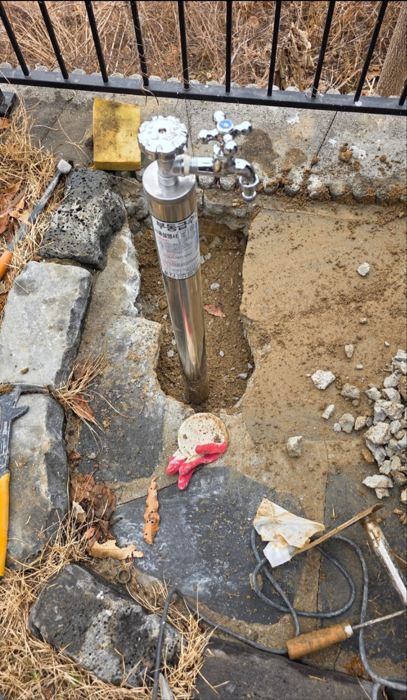

마당 수전 아래쪽 바닥이 계속 젖어 있다는 신고를 받고 출동한 현장입니다. 부동전은 겨울철 동파를 막기 위해 땅속 깊이 밸브를 두고 수도를 잠그는 구조의 외부 수전으로, 전원주택이나 마당이 있는 주택에서 흔히 사용됩니다.
구조가 복잡한 만큼 내부 부품이 노후되면 겉으로는 멀쩡해 보여도 안쪽에서 물이 계속 새는 경우가 많습니다. 기존 부동전을 확인해 보니 오래 사용하면서 내부 패킹과 밸브가 마모되어 물이 완전히 잠기지 않고 조금씩 흘러내리고 있었고, 이 물이 부동전 아래쪽 배수 구조를 따라 지표면으로 배출되지 못하고 주변에 스며들고 있었습니다. 밸브를 완전히 잠갔을 때도 미세하게 물소리가 이어지는 것으로 내부 부품 마모를 재확인했습니다.
노후된 부동전을 통째로 새 제품으로 교체하고, 주변 배관 연결부까지 다시 정리해 물샘이 없는지 꼼꼼히 확인했습니다. 교체 후에는 밸브를 여러 차례 열고 잠그며 정상 작동하는지, 잠갔을 때 완전히 차단되는지까지 재차 테스트했습니다.

부동전은 지상에 노출된 수전 손잡이와 달리 실제 개폐 밸브가 지하 깊숙이 위치하는 특수한 구조라, 내부 패킹이나 밸브 마모가 진행돼도 외관만으로는 이상을 알아채기 어렵습니다. 안성 미양면처럼 전원주택과 농가주택이 많은 지역에서는 부동전 사용 빈도가 높고 설치된 지 오래된 경우가 많아, 저희가 출동하는 누수 현장 중에서도 부동전 노후가 원인인 경우를 자주 접합니다. 물이 완전히 잠기지 않는 느낌이 들거나 겨울철 동파 이력이 있는 부동전이라면 미리 상태를 점검받아 두시는 것을 권해드립니다.
마당 수전 주변이 계속 젖어 있거나 겨울마다 동파 걱정이 되신다면 부동전 상태를 점검받아 보시길 권해드립니다. 방치하면 겨울철 동파로 이어져 땅을 다시 파내야 하는 더 큰 공사가 필요해질 수 있습니다.
부동전 교체는 밸브 개폐 테스트까지 마친 뒤에만 작업을 종료해 드립니다. 안성 미양면을 비롯한 전원주택, 농가주택 지역에서 겨울철 동파나 마당 수전 누수가 걱정되신다면 미리 편하게 문의해 주세요.
비슷한 증상으로 문의하실 곳을 찾고 계신다면 전화로 접수해 주세요. 접수 건은 확인 후 신속하게 연결해 안내해 드리며, 현장 진단 후 견적에 동의하신 뒤에만 작업이 진행됩니다.